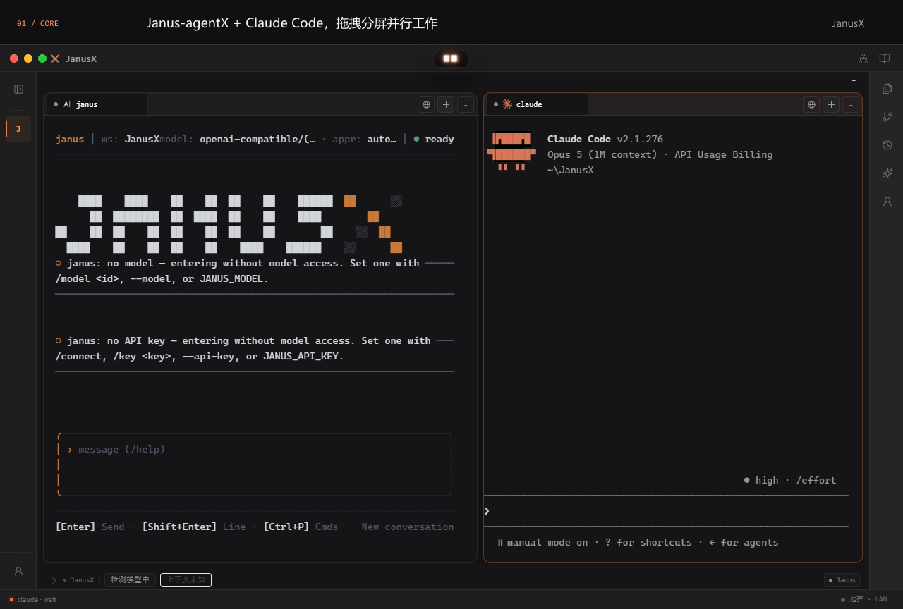
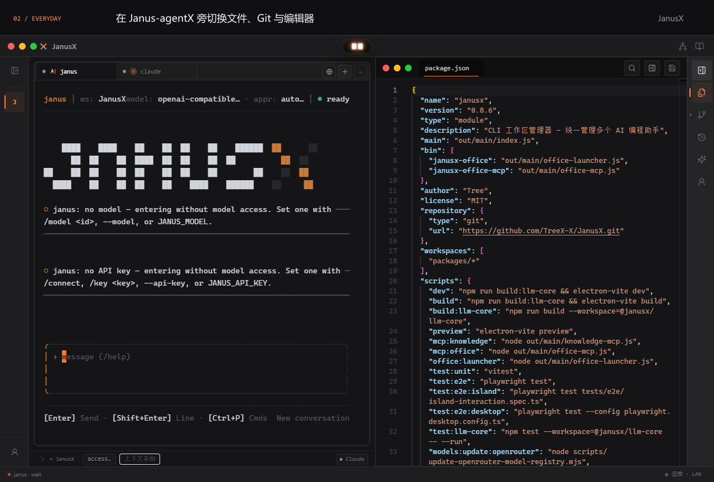
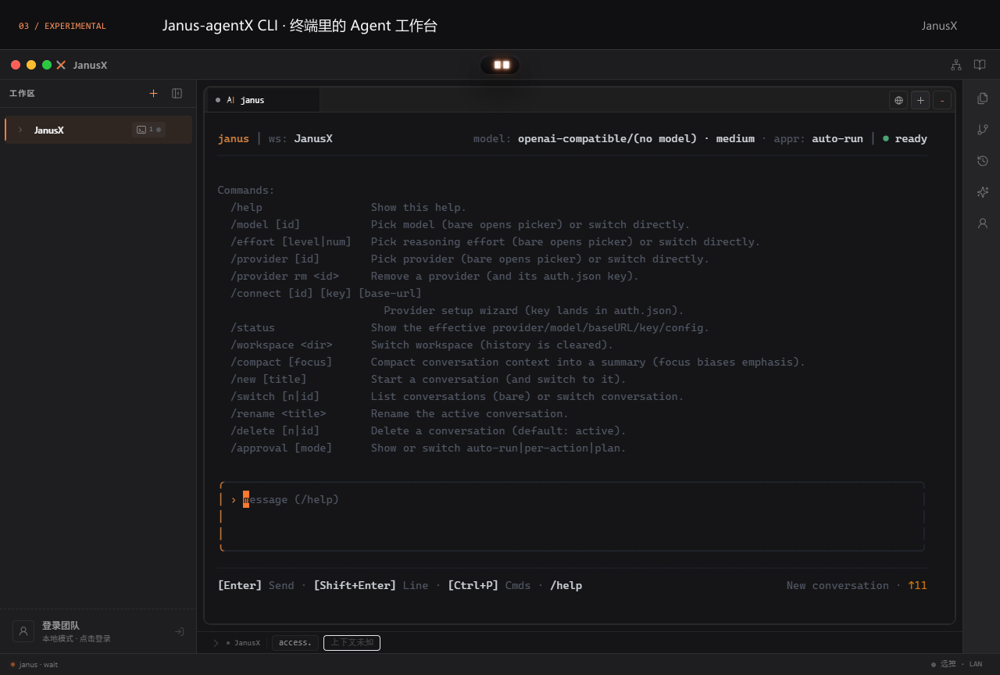
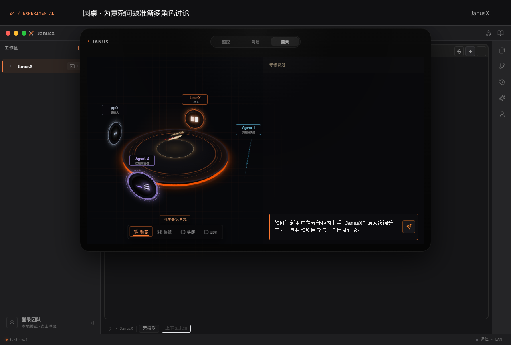
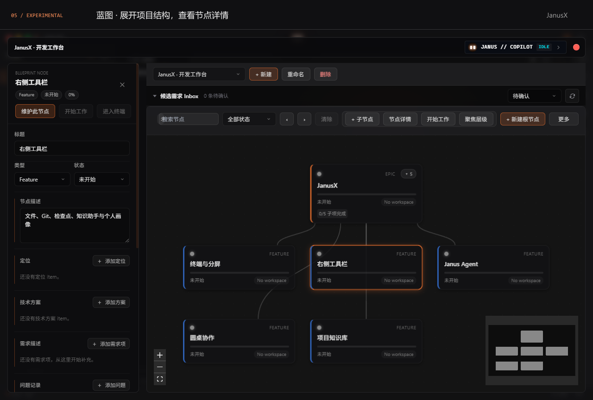
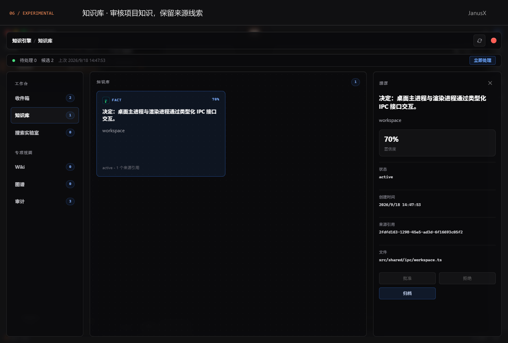

安装版
日常使用安装到你的电脑，自选安装位置，
创建桌面快捷方式。
01 DOWNLOAD
安装包由 GitHub Releases 提供。版本信息加载期间，可前往发布页查看。
目前提供 Windows 下载。macOS 与 Linux 暂无公开安装包。
02 GET STARTED
日常使用选择安装版；希望直接运行，选择便携版。
运行下载的 .exe 文件。安装版按向导选择安装位置并完成安装。
打开本地项目，选择 Shell 开始工作。需要 AI 功能时，再配置模型提供商与 API Key。
03 EVERYDAY WORKSPACE
多个 CLI 并排工作，文件和 Git 随手打开。以下演示录自真实 JanusX 桌面应用，使用 JanusX 自身的源码项目，展示本地界面与操作，未运行模型任务。
左侧 Janus-agentX、右侧 Claude Code，展示两个 CLI 的真实启动界面。标签拖到边缘即可上下或左右分屏，拖动分隔线调整比例，拖到另一面板中央合并回标签。左侧工作区还支持项目切换、排序与分组。

Janus-agentX 保留在终端中，右侧切换文件和 Git，再将编辑器嵌入主窗口。右侧栏还提供检查点、知识助手和个人画像；面板可调整宽度和收起，Markdown 可双栏预览。

右键工作区打开「运行配置…」，管理项目的分析、测试与启动入口。终端可选择 Shell、Janus、Claude、Codex、OpenCode 或 Pi。Janus-agentX、Claude Code 等 CLI 需先安装对应工具，执行模型任务前还需完成各自的登录或模型配置。
选择 Windows 安装包 ↑04 EXPERIMENTAL
以下功能处于实验阶段，交互与接口持续演进。模型推理需要配置可用的提供商、模型与 API Key。演示展示真实的准备、编辑和审核操作。
独立的交互式 TUI 支持会话、工具调用、文件、命令与 Git 操作，也提供单轮 chat 和 JSONL 输出。先按 CLI 仓库说明安装 janus，再从 Janus 终端入口启动，也可在系统终端独立运行。演示展示本地帮助与命令面板。
了解独立 CLI ↗
双击顶部 Janus Island，切换「圆桌」。主持人组织讨论，议题解决者与完善者参与推敲，可查看角色状态、结果卡片并导出讨论材料。适合需求澄清和方案比较；演示为议题准备，未运行模型讨论。

标题栏进入蓝图工作台，用目标、功能、任务和问题组织项目，查看节点详情、进度与关联信息。演示蓝图按实际产品功能手动整理；结构可本地编辑，AI 分析与维护需要模型配置。

标题栏进入知识库工作台。采集内容经过候选审核进入知识库，可检索已接受的知识、查看来源与文件引用，并使用 Wiki、图谱和审计入口。演示审核从仓库文档整理的条目；自动提炼效果依赖输入材料与模型配置。

在反馈中附上系统版本、JanusX 版本与错误信息。